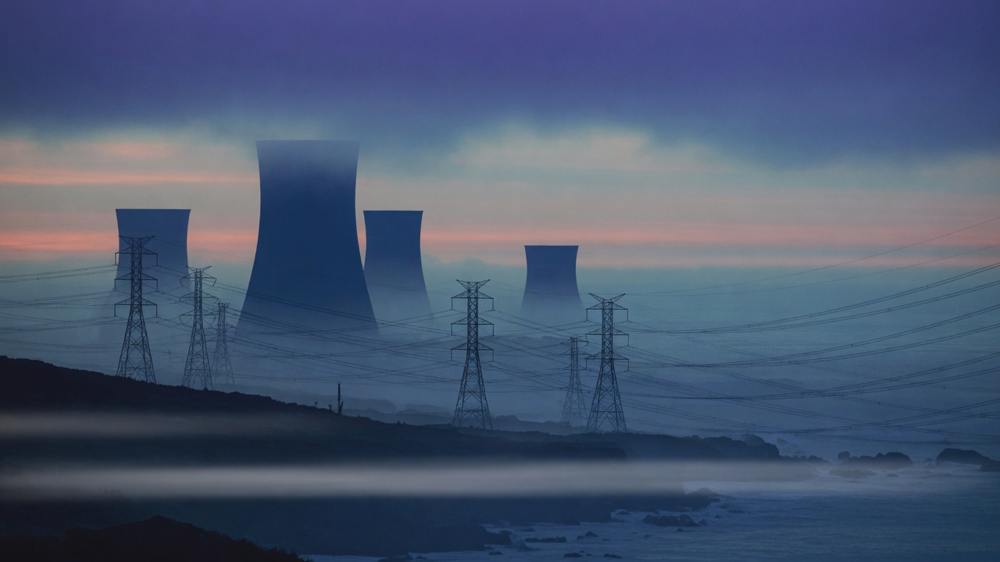

15 原子力と合理性
ラベルで対話を終わらせず、項目ごとに計算する。

台湾の原子力は高度に政治化されている。恐怖は狭い島のリスク想像と長い政治マーケティングから来る。正誤を別としてマーケティングは成功し、恐怖は集団の直感になった。
原発を封印すると一人当たり約1000ドル級のコスト（本書の粗算）がかかりうる。「反核＝道徳的に正しい」の隣にこの帳簿はほとんど並ばない。
台湾に近い中国沿岸には多くの原子炉がある。本書の厳しい比喩：クラス全員がカンニングするとき、清廉を装うと優等生にも最初の退学にもなりうる。エネルギー地政学は道徳の授業ではない。
より冷静な議論を望む：リスク、廃棄物、ベースロード、炭素、輸入燃料、電網安定——項目ごとに計算し、ラベルで終わらせない。
ロマンチックな台湾にはエンジニアの冷静が少し要る。息できる空気と説明できる電気料金は、どちらも合理性の一部だ。
出典: 台湾の大未来 — 今日のスイス、明日の台湾 — 張渝江 · 2. エネルギーと環境 · 7. ブロックチェーン・選挙・内政